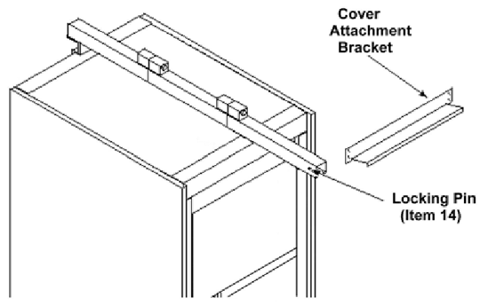
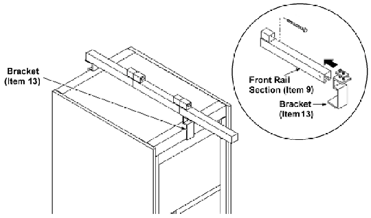
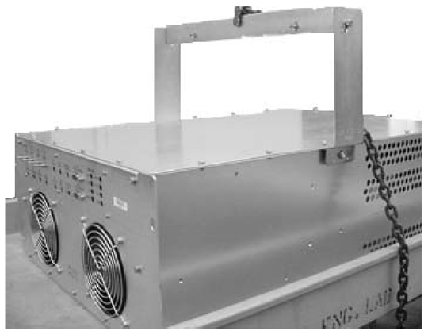

Operating Documentation
Direction 5133315-3, Rev# 14
Signa EXCITE HD 1.5T Service Methods
Module Version 2.0, Version Date 12/19/08
Operating Documentation |
| Required Persons | Preliminary Reqs | Procedure | Finalization |
|---|---|---|---|
| 1 | Not Applicable | 2 hours | Not Applicable |
Follow this procedure to power down the Driver Module and replace it.
| Item | Qty | Effectivity | Part# | Manufacturer | |
|---|---|---|---|---|---|
| Fixed Site Lift Tool Kit | 1 | - | 46-317266G6 | - | |
| ||||
| Possible personal injury or equipment damage! | ||||
| The module could fall when using lift tool. | ||||
| Before putting weight on the hoist chain, be sure that the links are aligned properly. This will help keep the chain from binding up or becoming kinked, which is nearly impossible to correct when the chain is under tension. |
| NOTE: | Refer to proper Cabinet Power Down Procedure. |
This section describes the replacement procedures for the Driver Module. (See Illustration 1 and Illustration 2.) Although the module is one large FRU and requires no subassembly removal, its weight (45 lb. or 20.4 kg) requires that a Lift Tool be used to remove it from the System Cabinet.
Illustration 1: Driver Module - Front View

Illustration 2: Driver Module - Rear View

| NOTE: | The Lift Tool is the preferred method of replacement to avoid personal injury, and enables replacement of the Driver Module by one person. |
Fixed Site Lift Tool Kit (46-317266G6) shown in Illustration 3.
See Fixed Site Lift Tool Kit for a complete list of the contents of the kit.
Illustration 3: Fixed Site Lift Tool Kit 46-317266G6

Steps Step 1through 6 below are for fixed sites only. For Mobile sites, begin with step Step 8.
Refer to the Cabinet Power-Down Procedure for the steps required to remove power from the System Cabinet.
Assemble the three-piece rail (Items 9, 10, and 11) with 4.75 in. x 1/2 in. cap screws (Item 15) and hex nuts (Item 37) shown in Illustration 4, and tighten with a crescent wrench.
Illustration 4: Hoist Assembly

Assemble the rear bracket (Item 13) to the rear plate (Item 12) with two cap screws (Item 35).
Insert the plate (Item 12) into the rear rail section (Item 11) until flush, and tighten the cap screws (Item 35).
Place the assembly on top of the cabinet with the attached bracket to the rear of the cabinet. (See Illustration 5.)
Illustration 5: Attaching Assembly to Cabinet

Attach the other bracket (Item 13) to the plate (Item 12) with two cap screws (Item 35).
Insert the plate (Item 12) into the front rail section (Item 9), push the bracket against the cabinet front and tighten the cap screws. (See Illustration 6.)
Illustration 6: Attaching Front Bracket to Cabinet

Insert the Hoist Assembly pivot bearings with the handle at left, into the front rail section for a Fixed site (shown in Illustration 7. Refer to Illustration 8 for a Mobile site.
Illustration 7: Attaching Hoist to Cabinet (Fixed Site)

Illustration 8: Attaching Hoist to Cabinet (Mobile Site)

Insert the lock pin (Item 14) through the holes in the front rail section as shown in Illustration 7.
Attach a grounding wrist strap.
Remove connections from the rear of the Driver Module.
Remove the four screws that attach the Driver Module to the System Cabinet frame.
Pull the Driver Module (mounted on a roller tray) forward until the roller tray reaches its maximum extension limit.
Attach the hanger (Item 20) to the hanger stud on the right side of the driver module; repeat this process on the left side. (See Illustration 9.)
Illustration 9: Attaching Hanger to Hanger Stud

Apply slight tension to support the chain with the chain hoist.
Press the release catch on the side of each roller tray. (The roller tray should detach, and allow the Driver Module to swing freely on the hoist.)
Lower the Driver Module to the ground and remove the hangers.
Position the replacement Driver Module in front of the cabinet, and attach hangers to the hanger studs located on both the left and right side of the Driver Module.
Use the hoist to raise the Driver Module.
Attach each side of the roller tray.
Lower the hoist chain slightly. (This will allow testing of the roller slide action, and ensure that the Driver Module is connected correctly to the roller tray and System Cabinet.)
Remove the hangers from the Driver Module.
Gently push the Driver Module back into the cabinet, and reattach the four screws that connect the Driver Module to the System Cabinet frame.
Reattach all connections removed earlier to the new Driver Module.
Remove and disassemble the hoist, and repack it in the case.
Refer to the Cabinet Power-Up Procedure for the steps required to restore power to the System Cabinet.
Perform a TR/DD Calibration after the replacement
Run one head and one 4 or 8-channel multicoil scan.